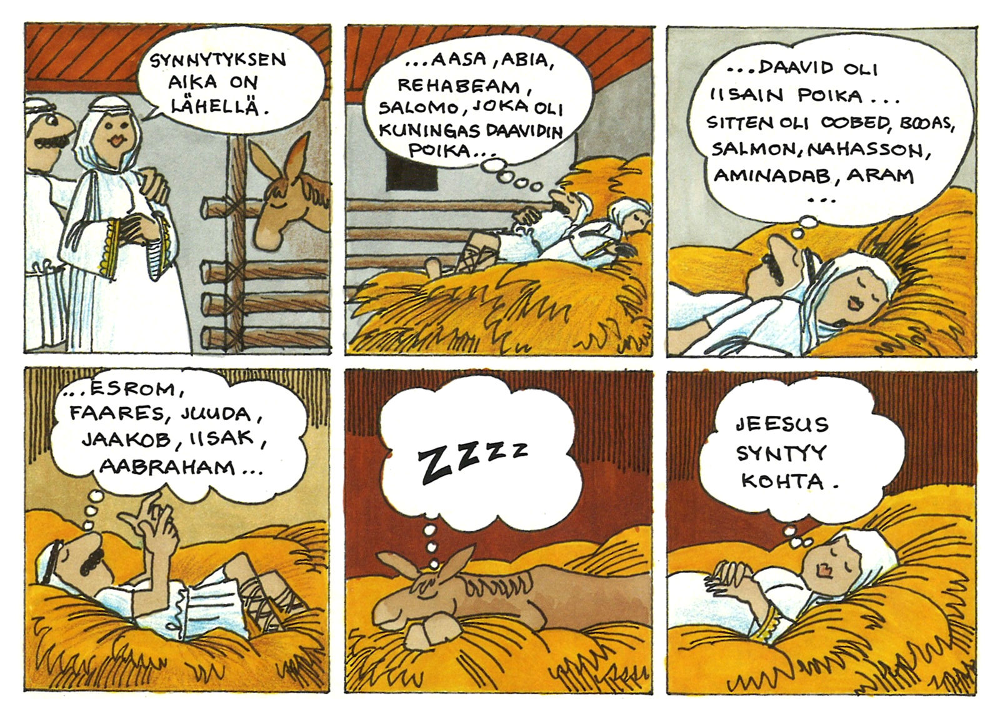
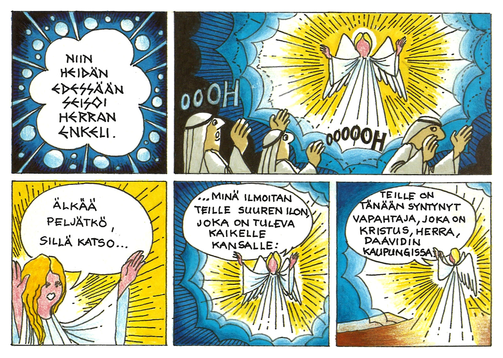
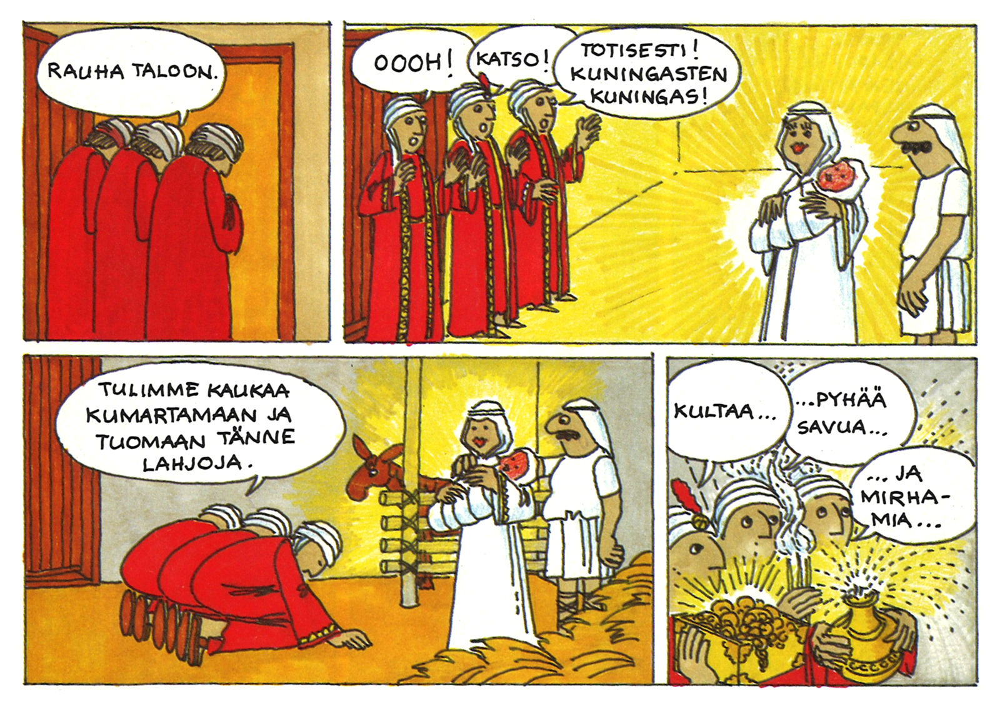
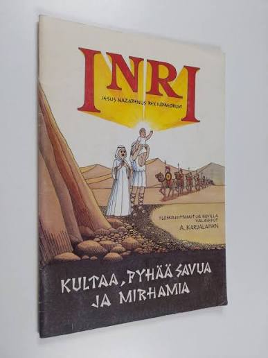

Joulun tapahtumat ruutu ruudulta
Inri kertoo jouluevankeliumin keisari Augustuksen verollepanosta paimeniin, itämaan tietäjiin, Egyptin-pakoon ja paluuseen Nasaretiin. Lähteinä ovat Luukkaan evankeliumin 2. luku (2:1–20) ja Matteuksen evankeliumin 2. luku (2:1–23).
Karjalainen kertoo tarinan leikillisesti. Selostustekstit kulkevat kivitauluissa, ja anakronistinen huumori tuo vanhan kertomuksen lähelle nykylukijaa. Alkuperäinen takakansi lupasi ”mielikuvitusta ja muhevaa huumoria”. Sisäkansissa on kartat.
Uuden painoksen julkaisee tekijän perikunta. Sivut on siistitty ja väritetty uudelleen, ja niillä seikkailee pieni etsimisleikki perheen pienimmille.
Pyhäkouluun, lapsi- ja perhetyöhön ja joulumuistamiseksi. Toimii sekä ääneen luettuna että lapsen itse luettuna.
- Laajuus
- 48 sivua, nelivärinen
- Koko
- 21 × 30 cm
- Sidonta
- Pehmeäkantinen
- Kieli
- Suomi
- ISBN
- 978-952-19650-0-5
- Ilmestyy
- Marraskuu 2026
Kirjan sivuilta



Sama piirros, uudet värit

Alkuperäinen 1992 Uusi väritys, luonnos
Uusi väritys, luonnos
Uudessa painoksessa värit ovat raikkaammat ja modernimmat, ja sivuilla on pieni etsimisleikki perheen pienimmille.
Määräalennukset seurakunnille
| Määrä | Kpl-hinta | Yhteensä | Toimitus |
|---|---|---|---|
| 1–9 kpl | 24,90 € | – | 5,90 € |
| 10 kpl | 19,90 € | 199 € | sisältyy |
| 25 kpl | 16,50 € | 413 € | sisältyy |
| 50 kpl | 13,90 € | 695 € | sisältyy |
| 100 kpl | 12,50 € | 1 250 € | sisältyy |
Toimitus sisältyy hintaan 10 kappaleesta alkaen. Lasku lähetetään toimituksen yhteydessä.
Kirjat painetaan ennakkotilausten perusteella, joten tilaamalla nyt varmistatte kirjat joulun toimintaan.
Perillä ennen adventtia
- Perjantai6.11.
Ennakkotilausten viimeinen päivä.
- Maanantai9.11.
Jos painos perutaan, ilmoitamme viimeistään tänään.
- Perjantai20.11.
Kirjat postitetaan viimeistään tänään.
- Sunnuntai29.11.
Ensimmäinen adventti.
- Kirjat painetaan ennakkotilausten perusteella.
- Kustantaja pidättää oikeuden perua tilaukset, jos vähimmäismäärä ei täyty. Perumisesta ilmoitetaan viimeistään ma 9.11., eikä siitä aiheudu tilaajalle kuluja.
- Kirjat postitetaan viimeistään pe 20.11., joten ne ehtivät perille hyvissä ajoin ennen ensimmäistä adventtia (29.11.).
- Lasku lähetetään toimituksen yhteydessä.
Tilaus sähköpostilla
Lähettäkää tilaus pe 6.11. mennessä ja kertokaa siinä:
- Seurakunta ja yhteyshenkilö
- Kappalemäärä
- Toimitusosoite
- Laskutustiedot ja verkkolaskuosoite
Kustantaja ja myyjä
Antero Karjalaisen perikunta
Flowman Oy
Y-tunnus 0943280-3
inri@flowman.fi
978-952-19650-0-5
Antero Karjalainen, oululainen sarjakuvantekijä. Hänen toinen albuminsa Kaarlen taru (1982) sijoittuu Oulun historiaan.